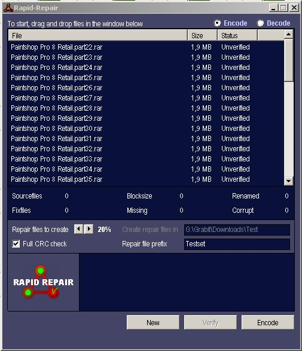
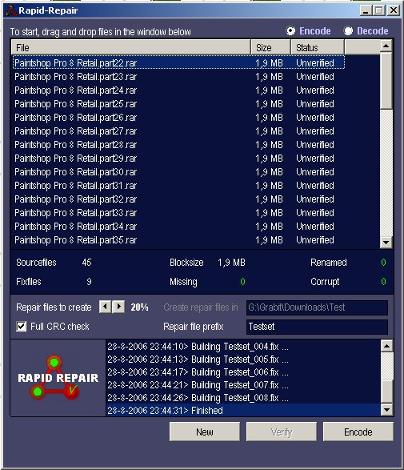
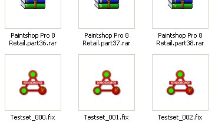
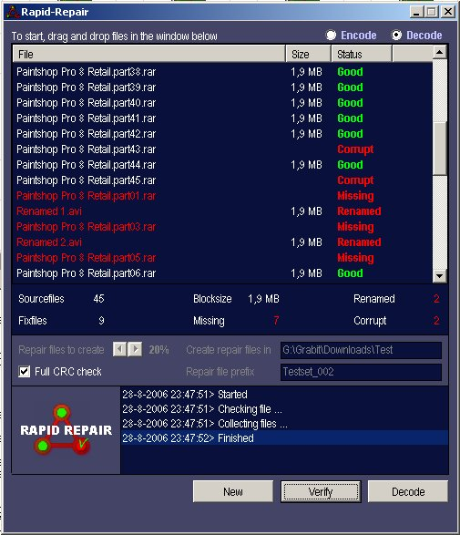
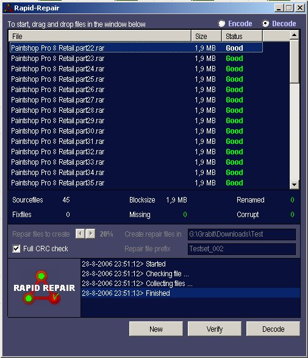

Introduction
Have you ever had a serious headache when it comes to corrupt or missing files? You have a set of files and one or more of them have errors or missing data in them. Rapid Repair is a program to repair files using redundant data. Like PAR, this program uses the Reed Solomon algorithm to recover lost data by using the existing files and a set of recovery files. Any of the missing files can be recovered by just 1 recovery file.Example
Let's say we have 80 original files (can be any type of file you want, it's mostly used on a set of RAR files) Let's create 10 percent fixfiles for this set. We get 8 fixfiles. Now we can delete or damage up to any 8 of the 80 original files and we are still able to recover those 8 files with our fixset.But there's more
Rapid Repair also takes in account renamed files by doing crc checks. You may rename all 80 files to whatever you want. They will be renamed correctly to there original name. There's an option for full or partial crc check, full will crc whole files, partial will only do the first 16k of each file. This last option is quicker but data that's corrupt beyond that 16k chunk will not be detected and will be verified as good. So it's preferable to always use full crc.VB to the MAX - Assembler powered
I created a custom DLL in assembler to speed up the big loops to the max. There's also a Filememory mapper which maps a file in memory that's than accessible trough a normal VB array. This array is than accessed by assemblercode directly. This has the BIG advantage that there are no huge memory consuming arrays used to hold complete files and such AND the speed is very, very satisfying. Files are mapped, read and then unmapped in fractions of seconds, and I'm talking about 100MB files!File associtaions
Rapid Repair (when compiled) also has file associtions with .fix files and a context menu. (a hidden option to remove the association (when compiled): use the ':noassoc' commandline argumentCreating a fixset
 - First we ensure the mode is "Encode". This can be set at the top right corner of the program. - Than we select our sourcefiles by dragging and dropping them in the top list. It doesn't matter how they are sorted. - For this example I created a set of 45 RAR files. - I named the fixfile prefix 'Testset', but any name will do. - I also left he precent of fixfiles to 20percent (in most cases this is sufficient). - We are ready to encode!  After encoding, we are faced with the screen above. It indicates our 45 sourcefiles and 9 (20% / 45 = 9) fixfiles. There's also a blocksize. This is the size of the largest file in the sourcefile set. All fixfile sizes will approach this blocksize.  There are some fixfiles created.The fun part
Now that we have a set of fixfiles, we can go crazy and delete, damage or rename any of the sourcefiles. You even may delete some fixfiles if you want. As long as you keep in mind the following rule: NUMBER OF DAMAGED FILES + NUMBER OF MISSING FILES MUST BE EQUAL OR LESS THAN THE NUMBER OF FIXFILES  - First we ensure the mode is "Decode". - We are faced with an empty screen now. - To decode, we only have to drag and drop one of the fixfiles to the list. - Click "Verify" To demonstrate I corrupted (damaged) 2 files, I deleted 7 files and I renamed 2 files. - You should see a screen similar to the one above. Rapid Repair tells us that there are some files corrupt, missing or renamed. Verify does not actually repair. It only verifies the set and tells what's wrong with it. - Now the big trick. Press "Decode"  If everything went right, we see a screen that tells us that all files are "good". This means our original set of files has been recreated! Cheers, Dusp2k Rapid Repare developer. 2006